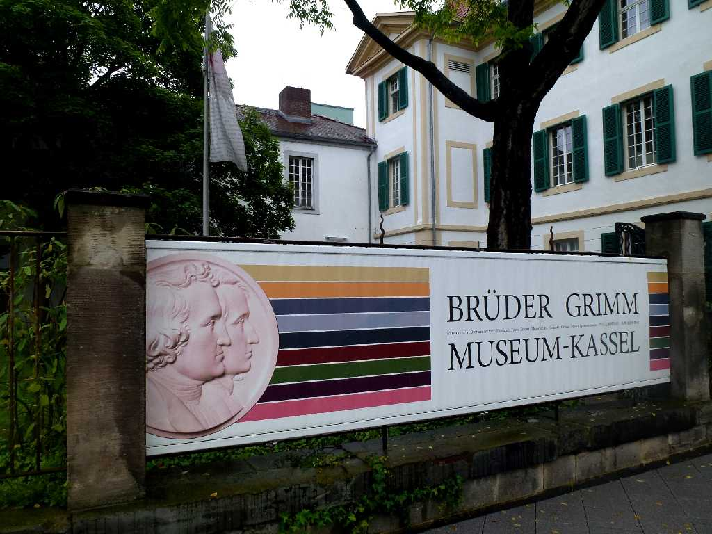
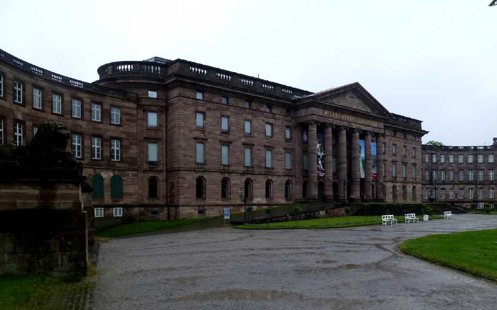
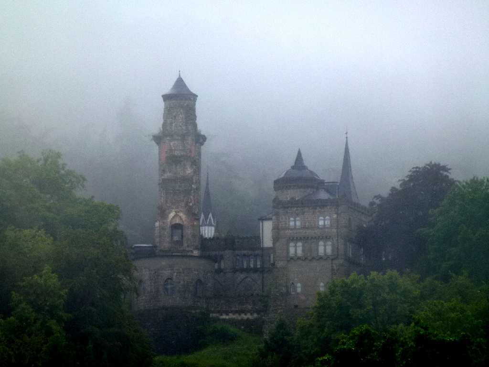
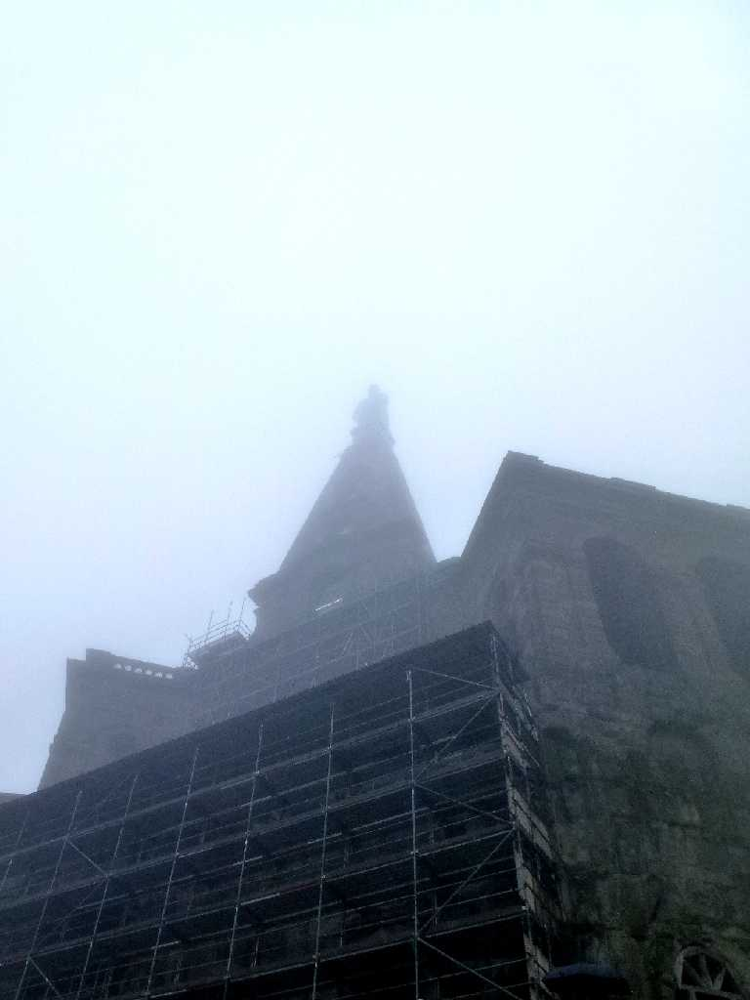
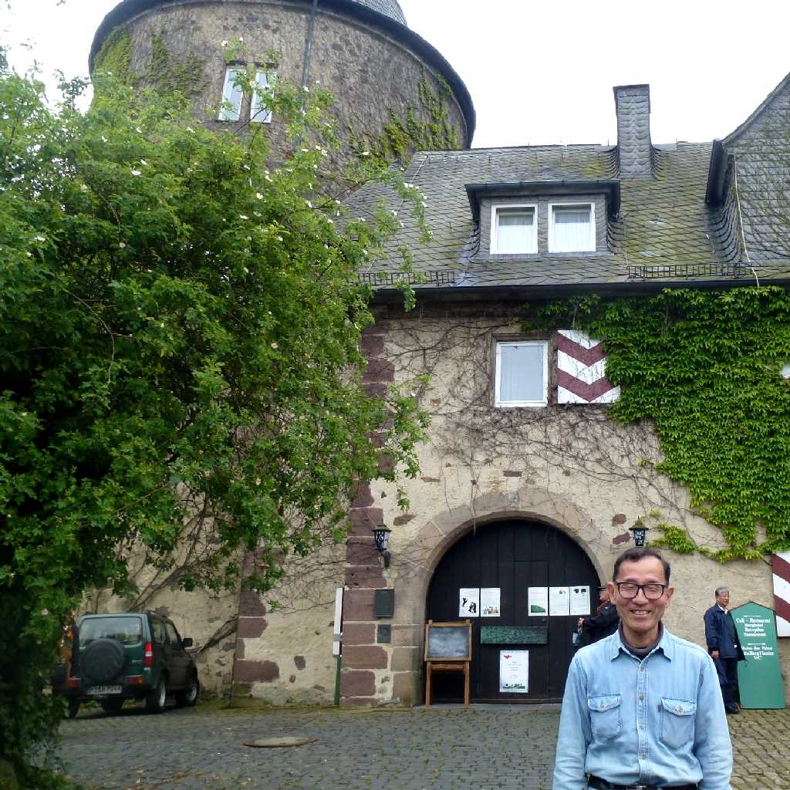

Brüder Grimm Museum Kassel
グリム兄弟博物館 グリム兄弟はカッセルで約３０年間過ごし１８１２年１２月２４日に子供と家庭の童話集を発表した

Schloss Wilhelmshöhe
ヴィルヘルムスヘーエ城は敷地面積２４０ｈａを持つヨーロッパ最大級のお城

Löwenburg Schloss Wilhelmshöhe
ヴィルヘルムスヘーエ城から霧の中レーベンブルク城を望む

Herkules Schloss Wilhelmshöhe
１７１７年に建てられたヘラクレス像は霧で良く見えず

May 29 2014 Sababurg Kassel
ザバブルク城は眠れる森の美女のお城